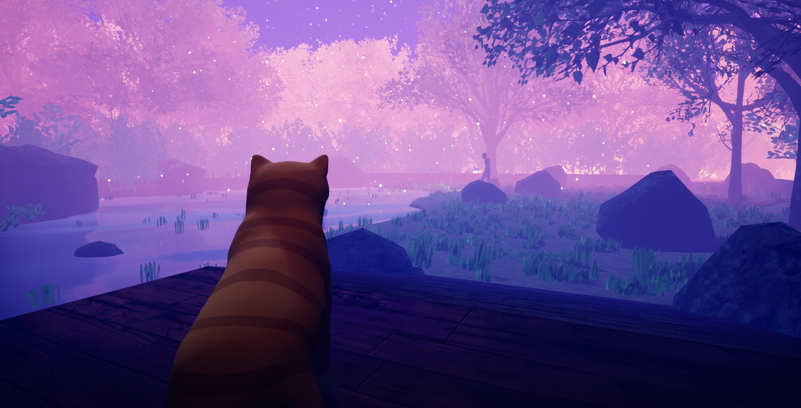
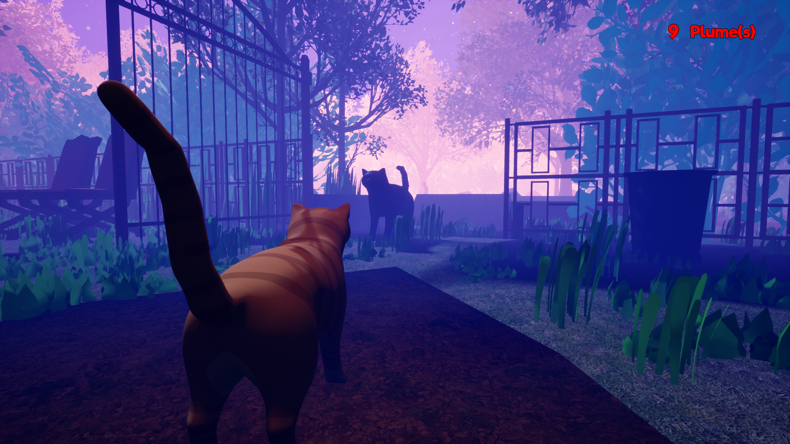

ACCÈS NON AUTORISÉ DÉTECTÉ // PROTOCOLE CYBER ROUGE ACTIVÉ
Recherche Alternance — Concepteur & Développeur IA / Full-Stack
BERNARD SOURICHANH
Concepteur & Développeur Pratique IA / Game Programmer
En formation RNCP Niveau 6 au Campus Numérique in the Alps, je recherche une alternance en tant que développeur full-stack (Web / Application / IA) ou en Game Programming. Passionné par la conception d'architectures logicielles, les moteurs temps réel (Unreal Engine, Unity) et la programmation Java, C# (.NET), C++ et SQL.
Mon expérience professionnelle, mes diplômes académiques et mon curriculum vitae
🎓 Formations & Diplômes
2026 - En cours
RNCP Niveau 6 — Concepteur & Développeur Pratique IA
Le Campus Numérique in the Alps
Formation approfondie en conception logicielle, architectures d'applications, intégration de modèles d'IA, développement full-stack et gestion de projets agiles.
2017 - 2021
Bachelor Game Developer & Game Designer
Human Academy — Angoulême
Formation intensive en programmation de jeux vidéo (C#, C++, UE4, Unity), game design, level design, mathématiques appliquées aux jeux et gestion de projets en équipe.
2013 - 2015
Expert Informatique
Epitech — Lyon
Apprentissage approfondi de la programmation en C, algorithmique avancée, structures de données et méthodologie par projets en autonomie.
2010 - 2013
BAC Pro SEN (Systèmes Électroniques Numériques)
Option Télécommunications & Réseaux — Lycée Saint-Vincent de Paul
Fondamentaux des architectures réseaux, protocoles de communication et maintenance des systèmes numériques.
💼 Expériences Professionnelles
2021 - 2022 (1 an)
Développeur Application Mobile
Seven Fallen — Lyon
Développement de l'application mobile officielle et tutoriel interactif pour le jeu de cartes Seven Fallen sous Unity. Programmation C#, interfaces tactiles Android/iOS et optimisation.
2025
Employé Polyvalent
Carrefour (Intérim)
Ravitaillement rayon épicerie, gestion des flux et organisation logistique en équipe.
2011 - 2013 (12 mois)
Technicien de Maintenance Informatique
Fust — Meyrin (Suisse)
Diagnostic matériel et logiciel, dépannage de systèmes, maintenance préventive et curative de parcs informatiques, conseil multimédia.
2009 (2 mois)
Technicien de Maintenance
S.N.C — Épagny
Support utilisateur, installation d'ordinateurs et réseaux, gestion et sauvegarde des données informatiques.
Outils, technologies, frameworks et domaines d'expertise
⚡
Langages & Code
C# (.NET) / C / C++
Java (POO / SOLID)
JavaScript / HTML5 / CSS3
Blueprints (Unreal Engine)
Scripting PowerShell / Python
🕹️
Moteurs & Jeux
Unreal Engine 4 & 5
Unity 3D & 2D
Physique, Collisions & Checkpoints
Gameplay & Contrôleurs Joueur
Intelligence Artificielle (Behavior Trees)
🗄️
Data & Systèmes
Bases de données SQL & NoSQL
MongoDB, Docker & Spark
IA Vectorielle & Pratique IA
OS Windows / Android / Unix & Réseaux
Hardware & Maintenance Informatique
🌐
Méthodes & Langues
Méthodes Agiles (Scrum, Kanban)
Git, GitHub & Versioning
Virtualisation & Environnements
Français (Langue maternelle)
Anglais & Notions de Japonais
Mes Projets de Jeux
Découvrez une sélection de jeux et applications que j'ai conçus et développés
Projet Solo
Cyber Strike
FPS rogue-lite nerveux développé en solo sous Unreal Engine 4. Survie en arène par vagues d'ennemis cybernétiques avec arsenal dynamique et gestion des munitions.
Unreal Engine 4FPS / Rogue-liteSoloPC
Projet Équipe (5)

Hungry Cat
Jeu d'aventure narratif atmosphérique sous Unreal Engine 4. Programmation du tutoriel, IA avancée du pêcheur, level design et intégration sonore.
Unreal Engine 4IA / PêcheurLevel Design4 Mois
Multijoueur
Air Race
Jeu de course 3D multijoueur sur PC développé en 4 mois sous Unity 3D par 4 Game Designers & Programmeurs sans graphistes 3D. Physique arcade et gestion de checkpoints.
Unity 3DCourse 3DMultijoueurC#
Stage Pro
Seven Fallen
Application mobile officielle pour le jeu de cartes Seven Fallen. Module d'apprentissage interactif pour nouveaux joueurs sur Android et iOS en C#.
Unity MobileC# (.NET)Android / iOSStage Pro
Dépôts & Code Source GitHub
Exploration de mes architectures logicielles, algorithmes et projets publics
POO_JAVA
Java
Jeu de plateau textuel Donjons & Dragons jouable à 1 ou 2 joueurs dans la console (TUI / ANSI). Architecture orientée objet respectant strictement les principes SOLID et Design Patterns.
BDD_SQL
Data / SQL
Conception et requêtage avancé de bases de données relationnelles SQL et NoSQL (MongoDB), SQL Analytique, Spark, IA Vectorielle et conteneurisation Docker.
Jeu_de_loie
Processing
Implémentation du classique Jeu de l'oie en Processing (Java) avec gestion complète des règles de cases, pièges et rendu graphique interactif.
Loisirs & Passions
Ce qui m'inspire et m'anime au quotidien en dehors du code
🎮
Jeux Vidéo & Game Design
Passionné par l'analyse des mécaniques de gameplay, les jeux indépendants inventifs, les RPG, les FPS compétitifs et l'évolution historique des jeux vidéo.
🚀
High-Tech & Spatial
Veille technologique active sur l'exploration spatiale, l'intelligence artificielle, le rendu graphique temps réel et le hardware informatique.
🛡️
Cybersécurité & Finance
Intérêt poussé pour les architectures réseaux sécurisées, la protection des données, les technologies financières et la cryptographie.
🍳
Cuisine & Créativité
Expérimentation culinaire, précision dans les recettes et esprit créatif appliqué aux arts du quotidien.
Contactez-Moi
Une opportunité d'alternance, un projet ou une question ? Écrivez-moi directement
En recherche active d'une alternance (Full-Stack / IA / Game Dev)
[PROJET SOLO] // CYBER STRIKE
Cyber Strike
Unreal Engine 4FPS / Rogue-liteProjet de fin d'études soloPC
📋 Contexte & Pitch du Projet
Cyber Strike est un FPS Rogue-lite nerveux développé en solo comme projet de fin d'études à la Human Academy sous Unreal Engine 4. Plongé dans une arène cybernétique hostile, le joueur doit repousser des vagues successives d'ennemis robotiques en gérant son arsenal dynamique et ses munitions.
🛠️ Tâches & Réalisations Techniques
Programmation de l'arsenal de tir : Mécaniques de tirs, recul des armes, temps de rechargement et dispersion balistique (Fusil d'assaut, Fusil à pompe, Pistolet).
Intelligence Artificielle ennemie : Arbre de comportements (Behavior Trees), détection du joueur par champ de vision, navigation dynamique NavMesh et tirs prédictifs.
Système de vagues & difficulté : Algorithme de spawn procédural d'ennemis avec courbe de difficulté croissante par manche.
Rendu & Immersion : Intégration d'effets visuels néon et particules sous Unreal Engine, feedbacks sonores immersifs et HUD interactif.
Hungry Cat est un jeu d'aventure narratif atmosphérique développé sur une durée de 4 mois sous Unreal Engine 4 pour PC. Le joueur y incarne un chat agile explorant un village côtier plein de secrets à la recherche de poissons.
👥 Membres de l'équipe (5 personnes) : Léa Frayssinhes, Florian Gras, Julien Maindron, François Sourichanh, Bernard Sourichanh.
🛠️ Ce que j'ai fait sur le projet (Rôle de Bernard Sourichanh)
Programmation du tutoriel : Conception et implémentation du tutoriel d'apprentissage interactif pour guider le joueur dans les contrôles du chat.
Programmation de l'IA du pêcheur : Création de l'Intelligence Artificielle ennemie sous UE4 (cônes de vision, zones de patrouille, détection du chat, états de vigilance et alertes).
Game Design & Level Design : Conception des énigmes environnementales et modélisation/blockout des zones du tutoriel et des rives du lac.
Intégration VFX / SFX : Implémentation des effets visuels (eau, poussières) et mixage audio complet (bruitages de pas, miaulements, ambiance côtière).
🖼️ Galerie Complète des Captures In-Game (Wix)
Village Côtier & Exploration

Infiltration : Chat vs IA Pêcheur
Bord de Mer & Pontons du Lac
[PROJET ÉQUIPE] // AIR RACE
Air Race
Unity 3DJeu de Course 3D - MultijoueurProjet de 2ème annéeDurée : 4 moisPC
📋 Contexte, Contraintes & Équipe
Air Race est un jeu de course 3D multijoueur futuriste développé sur PC sous Unity 3D en 4 mois.
⚠️ Contraintes techniques majeures : Réaliser un jeu 3D complet en 4 mois au sein d'une petite équipe et sans graphistes 3D. L'équipe était composée exclusivement de 4 Game Designers / Programmeurs.
👥 Membres de l'équipe (4 personnes) : Léa Frayssinhes, Clément Lavievic, Diwan Chouc, Bernard Sourichanh.
🛠️ Ce que j'ai fait sur le projet (Rôle de Bernard Sourichanh)
Programmation Gameplay en C# : Contrôleur physique des vaisseaux aériens (accélération, inclinaisons dynamiques, freinage d'urgence, système de boosts et sensation de vitesse).
Programmation Réseau Multijoueur : Architecture client-serveur pour la synchronisation en temps réel de la position des vaisseaux et gestion des collisions réseau.
Game Design & Système de Course : Détection automatique des checkpoints, calcul des tours, gestion du classement en temps réel et chronométrage précis.
Level Design modulaire : Création et assemblage des pistes aériennes avec obstacles et boucles acrobatiques.
🖼️ Galerie de captures (Wix)
Circuits 3D & Vaisseaux Futuristes
Gameplay Multijoueur & Checkpoints
[PROJET PRO / STAGE] // SEVEN FALLEN
Seven Fallen
Unity MobileC# (.NET)Stage de fin d'études (3 mois) & EntrepriseAndroid / iOS
📋 Contexte & Objectif
Seven Fallen est une application mobile officielle d'apprentissage et compagnon développée pour le jeu de cartes à collectionner physique Seven Fallen. Réalisée dans le cadre d'un stage de fin d'études de 3 mois puis prolongée par une expérience de 1 an en entreprise en tant que développeur d'applications mobiles.
🛠️ Ce que j'ai fait sur le projet (Rôle : Co-développeur)
Module d'apprentissage interactif : Développement complet des scénarios didactiques étape par étape pour enseigner les règles de duel aux nouveaux joueurs.
Développement Mobile C# : Programmation des mécaniques tactiles adaptatives pour smartphones et tablettes sous Android et iOS sous Unity.
Base de données des cartes : Intégration et structuration de la collection de cartes, statistiques, effets d'invocation et règles du jeu.